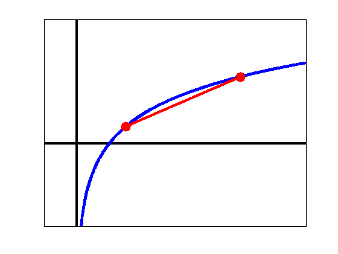

Illustration of the concavity of the log function
figure('Color',[1,1,1]);
xmin = -1;xmax = 7;
ymin = -2;ymax = 3;
axesLineSpec = {'-k','LineWidth',3};
plot([xmin,xmax],[0,0],axesLineSpec{:});hold on;
plot([0,0],[ymin,ymax],axesLineSpec{:});
domain = 0.01:0.0005:xmax;
f = @(x) log(x);
plot(domain,f(domain),'-b','LineWidth',4);
plot([1.5,5],[f(1.5),f(5)],'-r','LineWidth',3);
plot([1.5,5],[f(1.5),f(5)],'.r','MarkerSize',40);
set(gca,'XTick' ,[],...
'YTick' ,[],...
'XLim' ,[xmin,xmax],...
'YLim' ,[ymin,ymax],...
'box' ,'on');
